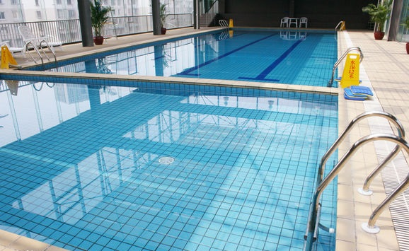
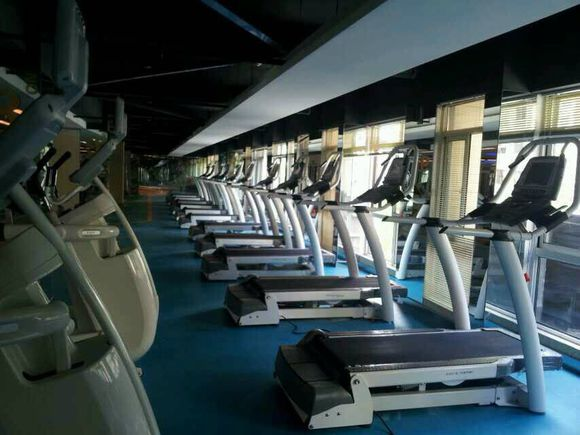
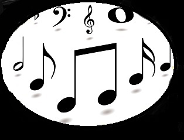

游泳 : 游泳素有“运动之王”的美称，喜欢运动的我对游泳倍增偏爱。
 人们可通过游泳来增强全身肌肉的力量。跑步能提高人们腿部的力度，而游泳需要全身各部位的肌肉协调用力，故能使全身肌肉都能得到锻炼。腿向后蹬、双臂拨水、背部一伸一缩、腹部收紧以增加腿部力量并维持臀部稳定，这些游泳的基本动作使全身的每一块肌肉都HIGH了起来，不仅增强了力度，还避免了器械运动可能会造成的肌肉不匀称等坑爹的恶果。谁都知道，游泳能减肥，不过你知道么，游泳的减肥效果跟在跑步机上跑步的减脂效果不相上下，而且如果选择合适的游泳姿势和强度的话，游泳比跑步还能减肥。以游10分钟为例，蛙泳能燃烧60卡的热量，仰泳能燃烧80卡，自由泳能消耗100卡，而蝶泳更是能燃烧掉150大卡的热量;而相比之下，跑步10分钟却仅仅能消耗100卡的热量。孰优孰劣，大家一看便知。
健身 ： 我塑我形，健美革命。
 身体是事业的本钱，健康是人生的重要基础。有了健康的身体才能完成四化大业，才能享受生活,鼓起生活勇气，磨砺意志，探索人生道路。生命在于运动，健康来自锻炼，经常运动，生命之树便会常青。我记得我从小体育就很好，长大了没有那么多时间户外运动，所以就偏爱上了健身房，对健身器材尤为喜爱，喜欢在跑步机上肆无忌惮的跑，生活不易的泪水也会随之蒸发，喜欢运动完之后满身的力量，不管你经历了什么不堪的事情，第二天就像满血复活一般，有对生活充满了激情。运动其实是让人放松的最好途径，反正对于我来说是。现在社会生活节奏这么快，难免会有些事情影响心情，如果你也曾有时会烦闷，也曾感觉到生活中的压抑，不防试着去健身吧，应该不会让你失望的。
唱歌 ： 每次都能被自己陶醉（虽然很难听）。

或许你还想了解我更多...